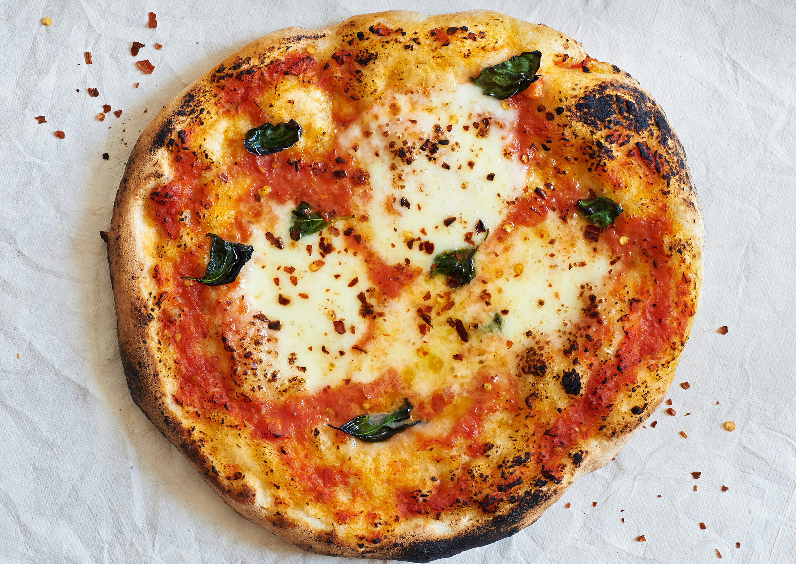

Home
Pizza

Description
A declicious Margarita pizza with simple ingredients and an easy to follow recipe.
Say goodbye to Dominos, and hello to your own home-made pizza!
Ingredients
- 300g Strong Bread flour
- 1 tsp Instant Yeast
- 1 tsp salt
- 1 tbsp olive oil
- 100 ml passata
- 1 garlic glove crushed
- 125g ball mozzarella
- Olives
- Spinach
- Red onion
- Green pepper
Steps
- Make the base: Put the flour into a large bowl, then stir in the yeast and salt. Make a well, pour in 200ml warm water and the olive oil and bring together with a wooden spoon until you have a soft, fairly wet dough. Turn onto a lightly floured surface and knead for 5 mins until smooth. Cover with a tea towel and set aside. You can leave the dough to rise if you like, but it’s not essential for a thin crust.
- Make the sauce: Mix the passata and crushed garlic together, then season to taste. Leave to stand at room temperature while you get on with shaping the base.
- Roast toppings:Heat oven to 180C/160 fan/gas 5. Roughly cut red onion and green pepper. Place in baking tray and drizzle with oil. Season with salt. Leave to cook for 10 mins or until lightly golden, then remove and place on side.H
- Roll out the dough: if you’ve let the dough rise, give it a quick knead, then split into two balls. On a floured surface, roll out the dough into large rounds, about 25cm across, using a rolling pin. The dough needs to be very thin as it will rise in the oven. Lift the rounds onto two floured baking sheets.
- Top and bake: turn up the heat of the oven to 240C/220C fan/gas 8. Put another baking sheet or an upturned baking tray in the oven on the top shelf. Smooth sauce over bases with the back of a spoon. Scatter with cheese, red onion, green pepper, spinach and olives, drizzle with olive oil and season. Put one pizza, still on its baking sheet, on top of the preheated sheet or tray. Bake for 8-10 mins until crisp. Serve with a little more olive oil, and basil leaves if using. Repeat step for remaining pizza.